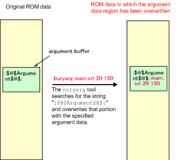
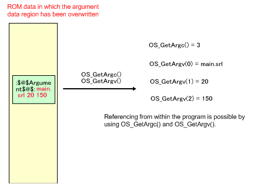

In the TWL-SDK, an area for argument data is set up in the ROM image. By rewriting this section before startup, you can pass which parameters are possible to use as C language argc and argv format arguments. The ROM image file can be directly overwritten, so you can test the program under multiple conditions without having to recompile.
The buryarg[.TWL] tool writes argument data to the argument data area for the specified binary data. Use buryarg for NITRO ROMs, and buryarg.TWL for TWL hybrid ROMs and TWL limited ROMs.
If the argument data region in the program is not referenced, that region is not created. The buryarg[.TWL] tool cannot be used for ROMs for which this area has not been created.
Starting with TWL-SDK 5.3, the method for embedding argument data with buryarg.TWL has been changed to the same specifications as buryarg. This solves the problem that argument data embedded for TWL hybrid ROMs could not be read in NITRO mode.
However, there are precautions for using buryarg.TWL. Read Precautions for TWL ROM below.
% buryarg [OPTION]... SRLFILE [argument]...
SRLFILE is the original ROM file for rewriting. However, you can specify the ROM file list (NLF or TLF). When you specify a ROM file list, buryarg[.TWL] analyzes the content, and operations will be done on the ARM9 static module file.
If the -r or --remain options are specified, the original file remains. By default, the original file is modified. If you do not want to change the original file, specify this option. The alias filename is the original filename plus .argAdded. When the output file is selected with -o option, the original file is not changed, even when this option is not specified.
The -o and --output options take arguments. With this option, the output file is specified as in the following: -o=dest.srl or -o dest.srl. Do not specify the same file for the source file and the output file. Also, if "-" (minus) is specified as the output file, output goes to standard output.( Specify as -o-. See --stdout, which is explained below.
--stdout is the same as specifying -o-. It outputs to standard output.
The -f and --file options take arguments. These options are for specifying a file as the data to replace. Specify as -f=rep.dat or -f rep.dat.
If the -q or --quiet option is specified, quiet mode is used, and only error messages are output.
If the -v or --verbose option is specified, detailed operation descriptions are displayed. Because output is made on the standard output, do not specify these options together when writing ROM data to the standard output.
The -h or --help options display simple instructions.
The -d or --debug options are for debugging. They dump the data that is to be replaced.
The --version option displays the command version.
Immediately after compiling, a string is written in the argument data region in the ROM data. This string identifies that region. buryarg[.TWL] searches for this text string in the ROM and then reads the argument data. The string used for finding the position is not rewritten, so the argument data can be rewritten over and over again to the same ROM data.

The argument area's data can be accessed from your program by using the OS_GetArgc and OS_GetArgv functions.

Caution: Be careful to avoid the following errors.
- Specifying the same file as the input file with the-ooption.
→ This specification is not required if you want to overwrite the argument data. This is the default behavior.
- Overwriting the argument data for the ROM file (SRL), then starting up from the ROM file list (NLF or TLF).
→ When an application is started from a ROM file, the debugger reads the modules written in the NLF file. Even if the ROM file is overwritten, those changes are not applied. If starting an application from an ROM file list, specify the ROM file list withburyarg[.TWL]and overwrite the necessary data.
- Overwriting the argument data for the ROM file list (NLF or TLF), then starting up the ROM file (SRL).
→ This is the opposite of the example above. Overwrite the argument data for the ROM file.
- Trying to overwrite the argument data of an image that does not have an argument data area.
→ ROM images created with old versions of the SDK do not have an area to store the argument data. When theburyarg[.TWL]command is run on these images, it displays an error that indicates the string for the argument data area could not be found, and the command then terminates.
→ If the argument data region is not referenced at least once in the program, the argument data region is dead-stripped at compile time. For example, if theOS_GetArgcorOS_GetArgvfunction has never been called, an error occurs.
- Trying to overwrite the argument data on a FINALROM build image.
→ The FINALROM build image does not have an area to store the argument data.
- Trying to overwrite the argument data for an image compressed in a static region.
→ When an image is compressed in a static region, the string cannot be found and an error is generated. If you embedded argument data, do not apply compression.
Argument data cannot be handled with a FINALROM. There is no memory for storing argument data. The OS_GetArgc function always returns 0. The OS_GetArgv function always returns NULL. The reason that argument data cannot be handled for FINALROM builds is that a security hole may develop if a program depends on data that can be provided externally.
Even in the case of a FINALROM build, the check routine in the program remains as long as it is not deleted. Attention is required because this code is meaningless in the case of FINALROM builds. (For example, for a game with 30 stages, if analysis is made of a check routine such as "if argument data is STAGE > 30" this may lead to the assumption that there may be a hidden stage.)
With TWL ROM, the hash value is calculated when you create a ROM image. Therefore, if you embed argument data into a ROM image using buryarg.TWL, the hash value will be altered, and the ROM will not start up. For TWL ROM, use buryarg.TWL for the ROM file list (TLF) and then use makerom.TWL to recreate the ROM file (SRL).
The sample demos in the OS library are good references for using this method.
$TwlSDK/tools/bin/buryarg.exe
$TwlSDK/tools/bin/buryarg.TWL.exe
OS_GetArgc
OS_GetArgv
OS_GetOpt*
2009/05/25 Standardized the specifications of buryarg.TWL with those of buryarg. Also unified the manuals. Added explanation that this cannot be used with compression.
2008/07/08 Added information so that buryarg.TWL is used for TWL.
2008/06/24 Added the fact that this mechanism cannot be used with TWL.
2005/08/30 Added OS_GetOpt* to See Also. Added --stdout.
2005/07/22 Added support for NLF files.
2005/07/21 Initial version.
CONFIDENTIAL